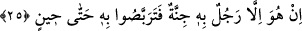
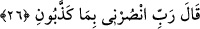

25. “Bu, yalnızca kendisinde delilik bulunan bir kimsedir. Öyle ise, bir süreye
kadar ona katlanıp bekleyin bakalım.”
“Bu, yalnızca kendisinde delilik bulunan bir kimsedir.” İşte onun için bütün bu
söylediklerini söylüyor. “Eğer mecnun olmasaydı böyle sözler söylemezdi; çünkü insan
risâlet/elçilik kabiliyetine sahip değildir.” Delilik; nefis ve akıl arasına bir engel
girmesidir.
et-Te’vîlâtü’n-Necmiyye’de der ki: “İşâret etmektedir ki hakîkat ehlinin halleri, tabîat
erbâbına göre deliliktir. Nitekim tabîat erbâbının halleri de hakîkat ehline göre
deliliktir.”
Mûteber olan delilik, aklı terk etmek ve aşkı seçip tercih etmektir.
Hâfız der ki:
Leylâ konağının yolunda nice tehlikeler var
Daha ilk adımda Mecnun olman şart
Sâib ise şöyle der:
Mecnun olanların gönlü, gayb âleminin penceresidir
Öyle ise ben divanesi çok olan o şehri istiyorum
“Öyle ise, bir süreye kadar” delilikten kurtulacağı vakte kadar “ona katlanıp
bekleyin bakalım.” Ona sabredin, bekleyin ve gözleyin. Râğıb der ki: “
”
pahalanması veya ucuzlaması umulan bir ticaret malı ya da yok veya var olması
gözlenen bir şeyi beklemektir.”
Kâşifî der ki: “Bir süre sabrediniz ki kısa zaman içinde ölür ve ondan kurtuluruz veya
bu cinnet hâlinden çıkıp da aklı başına gelir, bu sözleri söylemeyi terk eder ve kendi
işine bakar.”
26. (Nuh), “Rabbim! beni yalanlamalarına karşı bana yardım et!” dedi.
“Nuh (a.s.), onların îman etmelerinden ümidini kesince: “Rabbim! beni
yalanlamalarına karşı” yâni beni yalanlamaları sebebiyle veya yalanlamalarına
karşılık olarak onları tamamen helâk ederek “bana yardım et!” dedi.”